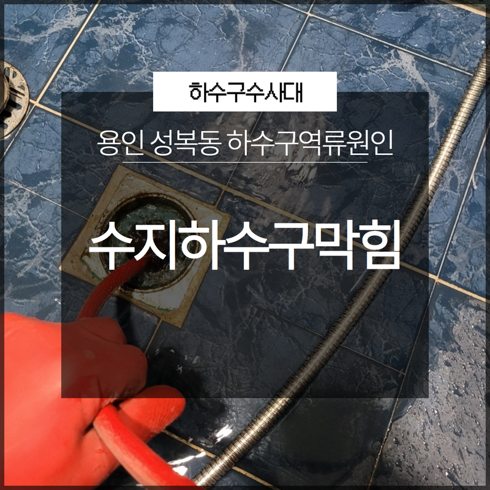
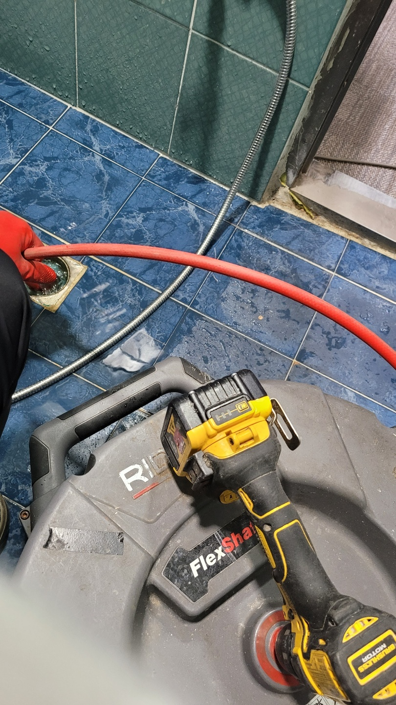
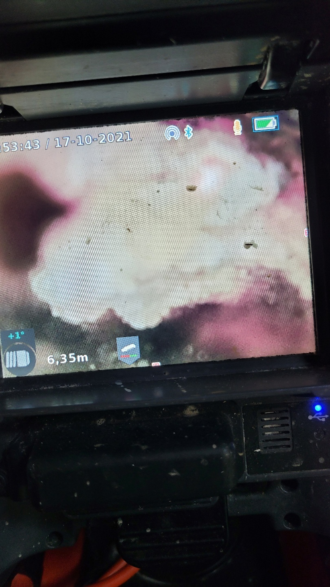

🏠 과천동화장실역류 주암동 오수맨홀청소 배관전문
용인 하수구막힘 전문 시공 후기

📋 작업 개요
- 위치: 용인
- 서비스 유형: 하수구막힘, 배관막힘, 맨홀막힘, 역류해결, 뚫는업체, 배관청소, 고압세척
- 작업 일시: 2025. 2. 11. 23:54
- 업체명: 하수구수사대 (010-5615-2118)
🔍 문제 상황
안녕하세요 하수구수사대입니다:)
우리는 일상 속에서 자주 물을 사용하고 있고 사용한 물을 배관으로 버리는 일이 자주 이루어지고 있는 만큼 하수구에서는 갑작스럽게 알 수 없는 문제가 발생하는 경우가 많이 있습니다. 하지만 배수구를 통해서 발생하는 문제들의 경우는 별다른 증상을 동반하지 않은 상태에서 갑자기 나타나는 경우가 많기 때문에 막히는 상황은 난감할 수밖에 없는 것입니다. 오늘은 하수구 문제 중에서도 가장 자주 발생하고 있는 용인 수지하수구막힘 고기리 성복동 하수구역류원인에 대해서 알아보는 시간을 가져보도록 하겠습니다.
용인 수지하수구막힘 고기리 성복동 하수구역류원인

🔎 원인 분석
💡 전문가 진단: 용인 수지하수구막힘 고기리 성복동 하수구역류원인
우리가 일상에서 겪고 있는 대표적인 하수구의 역류 원인으로는 바로 우리가 알게 모르게 배수구로 내려보내게 되는 이물질들로 인해서 발생하게 되는 경우가 많이 있습니다. 이러한 이물질의 경우에는 물에 쉽게 녹지 않는 특징을 가지고 있기 때문에 보통 배관 안쪽의 깊은 곳에서부터 쌓이기 시작하는 경우가 많이 있습니다.
이로 인해서 입구를 점점 좁아지게 만들게 되는 것인데요 이러한 과정이 오랫동안 반복이 되다 보면 결국에는 하수구역류의 원인으로 이어지게 되는 것입니다. 현재 대부분의 분들이 거주하는 주택의 형태가 공동 주택인 경우가 많이 있는데요 이러한 곳에서 하수구 막힘 현상이 발생하게 되는 경우에는 가장 아래쪽에 위치해 있는 세대 쪽부터 배수구에서 물이 넘치게 될 위험이 있는 것입니다.
이렇게 하수구의 역류원인으로 인해서 문제가 발생하게 된 경우에는 이웃 간의 분쟁이 일어날 수 있는 소지가 될 수도 있는데요 특히 여기에서 역류 현상까지 이어지게 된다는 것은 심각한 문제가 발생하고 있다는 뜻입니다. 그러므로 이를 해결하는 데 들어가게 되는 비용이나 시간도 또한 부담스러울 수밖에 없는 것입니다.

🔧 작업 과정
이렇게 갑작스럽게 발생하는 배관의 역류 현상으로 인해서
서로 간의 분쟁을 예방하기 위해서는 평상시에 물을 사용을 하실 때 하수구 내부로 이물질들이 딸려 들어가지 않도록 각별하게 신경을 쓰는 것이 필요하다고 할 수 있습니다. 그렇다면 용인 수지하수구막힘 고기리 성복동 하수구역류원인 역류 현상이 발생을 하게 되었을 때 이를 해결할 수 있는 방법에는 어떤 것이 있을까요?
묻혀있는 배관의 경우에는 보통 우리가 눈으로 직접 확인을 할 수 없는 곳에 매립이 되어 있기 때문에 문제가 발생하는 경우에는 원인을 파악해서 해결할 수 있는 전문 업체로 의뢰를 하는 것이 좋은 것입니다. 전문 업체에서 보유를 하고 있는 장비를 통해서 어디서 문제가 발생했는지를 정확하게 파악을 하는 것으로도 여러 가지의 문제를 쉽게 해결할 수 있게 됩니다.
하지만 업체를 부르는게 귀찮거나 비용이 부담스럽다는 이유로 인해서
개인이 직접적으로 해결을 하려고 하다 보면 오히려 더 큰 문제를 유발하게 되는 상황이 발생할 수 있는 것입니다. 그러므로 이러한 상황이 발생하지 않도록 유의하시는 것이 필요하다고 할 수 있습니다. 보통 배수구를 통해서 물이 차오르는 상황이 발생하게 된 경우에는 업체에서 여러 가지 장비를 통해서 해결을 하게 되는데요


✅ 작업 완료
진행하는 과정을 보게 되면 보통 석션기나 전동 와이어 스프링이과 같은 장비를 이용해서 막힌 배관을 뚫는 작업을 하게 되는 경우가 많이 있습니다. 하지만 상화에 따라서 오염도가 심각하고 시간이 오래 지난 상황의 경우에는 고압 세척이라는 작업을 할 수 있는데요 하수구 내부에 강한 수압으로 청소를 하는 방식이라고 할 수 있습니다.
경기도 용인시 수지구 수지로342번길 32 5층 508호 에이치01




⚠️ 하수구 배관 막힘 예방 및 관리 가이드
- ✅ 머리카락, 비닐, 물티슈 등 물에 분해되지 않는 이물질은 하수구 유입을 절대 금지해 주세요.
- ✅ 하수구 거름망을 씌우고 모여진 이물질은 주기적으로 쓰레기통에 바로 비워주셔야 합니다.
- ✅ 배관 노후가 심할 경우 이물질이 더 쉽게 걸리므로 주기적인 배관 세척(고압세척 등)을 권장합니다.
- ✅ 작업 후 1년 이내 재발 시 하수구수사대에서 무상 A/S 보증 서비스를 제공합니다.
💡 핵심 정리
- 확실한 장비 작업(내시경 점검 및 샤프트 스케일링)으로 원인을 뿌리 뽑습니다.
- 작업 후 1년 이내에 동일한 부위 재발 시 100% 무상 A/S 서비스를 보장합니다.
- 서울 · 경기 · 인천 전 지역에 24시간 언제든 긴급 출동할 수 있도록 항시 대기 중입니다.
❓ 자주 묻는 질문 (FAQ)
🚨 용인 하수구막힘 문제로 고민이신가요?
정확한 원인 진단과 확실한 시공으로 재발 없는 해결을 약속드립니다.
24시간 긴급 출동 | 서울 · 경기 · 인천 전지역 | 1년 내 재발 시 무상 A/S